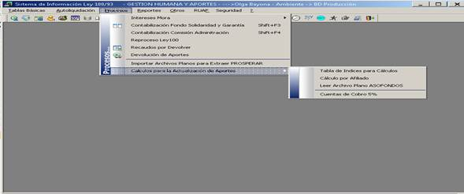
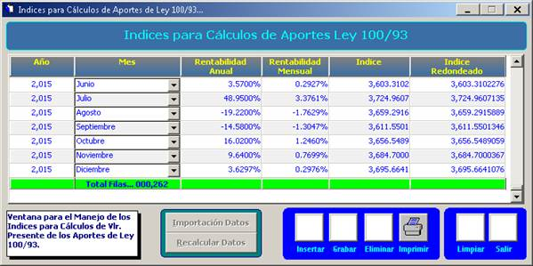
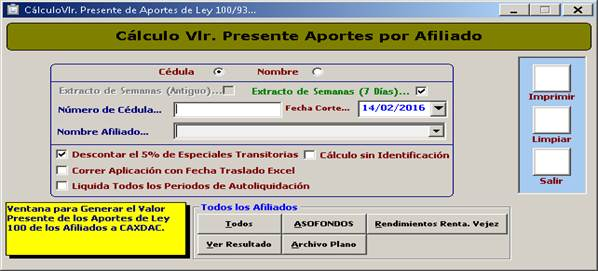
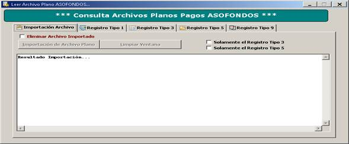
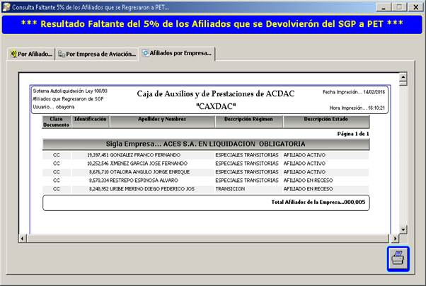

De esta ventana se despliegan los siguientes sub-menus:

Registra el manejo de los indices para calculos del valor presente de los aportes de Ley 100 de 1993.

Genera el valor presente de los aportes de ley 100 de los afiliados a CAXDAC.
Esta ventana no se encuentra en uso.

Esta ventana no se encuentra en uso.

Registra los nombres de los afiliados que se devolvieron del Régimen de Sistema General de Pensiones SGP al Régimen de Pensiones Especiales Transitorias PET.
El resultado se puede validar por Afiliado, por empresa de aviación, o afiliados por empresa de aviación.
See Also